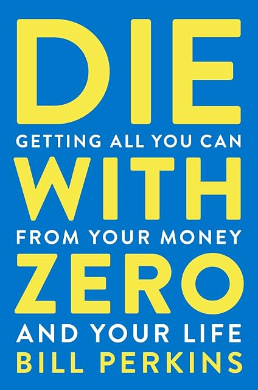

(Audio) Die with Zero, by Perkins
Tuesday July 7, 2026
There's something zeitgeisty about Perkins' carpe diem advice, focused on experiences over possessions and fatalistic about the future. I expect writing and promoting the book is a good experience for him. But his advice is not good in general and it doesn't seem like he takes it all that seriously.
Perkins several times criticizes the "but I love my job" viewpoint, suggesting that people are fooling themselves. But as far as I can tell, he's firmly in this camp. The book's site (which sounds so AI-generated it's embarassing) includes an attempt to get ahead of this critique:
"Skylar, SkyFi, and SynMax aren't separate ventures from Die With Zero — they're proof of it: for Bill, building is the highest-fulfillment use of time."
It's hard to take him seriously given that he's still presumably getting income from his hedge fund and other companies.
The advice itself, where it's concrete at all, isn't as dramatic as it wants to seem. Perkins gives one formula for how much money you need, and it's annual expenses times years you expect to live times 70% to allow for some growth of capital. If you expect to still live 35.7 or more years, this gives a number higher than the 4% rule does.
Granted, the 4% rule was originally based on a 30-year retirement, and Perkins' recommendations about giving to children and charity sooner rather than later isn't bad as such, but I think the whole "die with zero" idea ignores the income value of money. If you spend all your money you destroy the future income-generating potential of that money. You can only sell the farm once.
This is particularly clear in Perkins' recommendation that people consider annuities. I'm not sure annuities are a good deal. If you're scared about volatility, why not get bonds for income and continue to own your principle? Is a slightly higher monthly payment really worth losing your principle? There are more complexities, but you really have to bet that you're going to live a long time and markets are going to do super poorly if you want annuities to be a good deal, and in such a circumstance I don't know what guarantee you have that the company doing this deal for you doesn't go under anyway. So I don't like annuities, for the most part.
I mostly agree with Karsten Jeske's analysis of the book's ideas.
The book isn't all bad. Thinking about health, wealth, and time is worthwhile. The "memory dividends" idea is fun. He references Your money or your life, and his book is kind of a spendier version. He credits his ghostwriter, Marina Krakovsky, in the acknowledgments, which is nice to see. For sure, there's no reason to hoard money for the sake of it. But there's no great reason to die with zero either.

Perkin's "rules"
- Maximize your positive life experiences.
- Start investing in experiences early.
- Aim to die with zero.
- Use all available tools to help you die with zero.
- Give money to your children or to charity when it has the most impact.
- Don’t live your life on autopilot.
- Think of your life as distinct seasons.
- Know when to stop growing your wealth.
- Take your biggest risks when you have little to lose.